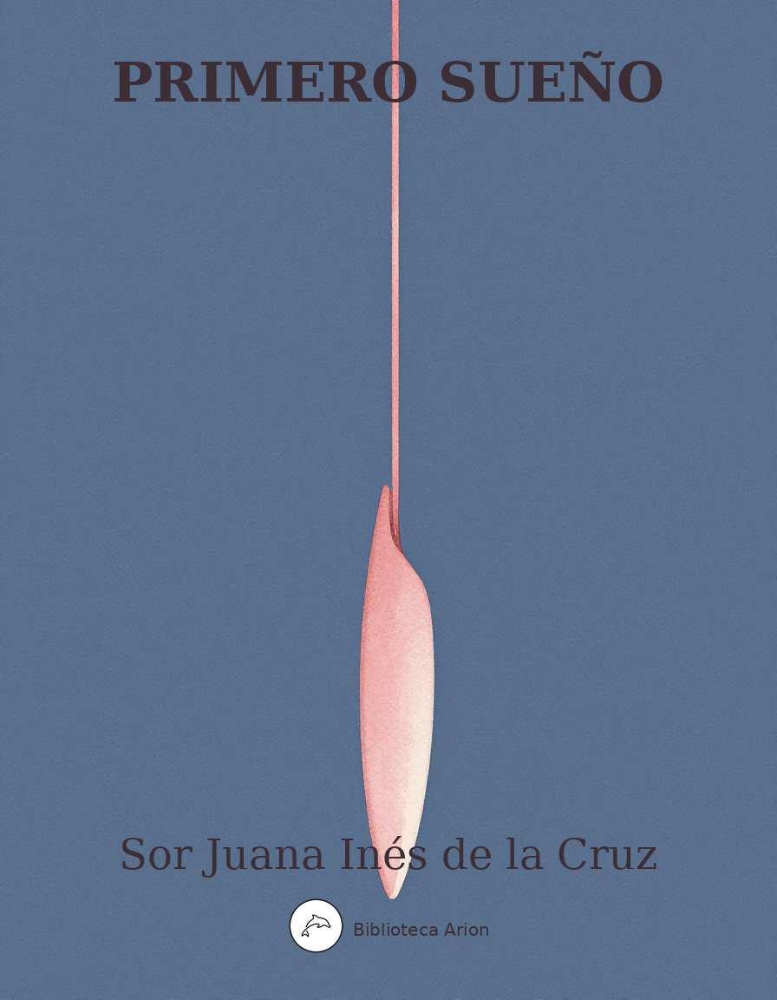

EPUBPrimero Sueño
Primero Sueño
Poema filosòfic barroc de 975 versos en forma de silva, considerat l'obra mestra de Sor Juana. Narra el viatge de l'ànima durant el somni nocturn, que intenta comprendre la totalitat de l'univers mitjançant la raó.
Primero Sueño
Autor: Sor Juana Inés de la Cruz Font: wikisource Llengua: castellà
Primero Sueño de Sor Juana Inés de la Cruz Descargar como Primero SueñoPrimero SueñoSor Juana Inés de la Cruz
Edición de Antonio Alatorre
Piramidal, funesta, de la tierra
nacida sombra, al cielo encaminaba
de vanos obeliscos punta altiva,
escalar pretendiendo las estrellas;
si bien sus luces bellas,
exentas siempre, siempre rutilantes,
la tenebrosa guerra
que con negros vapores le intimaba
la pavorosa sombra fugitiva
burlaban tan distantes,
que su atezado ceño
al superior convexo aun no llegaba
del orbe de la diosa
que tres veces hermosa
con tres hermosos rostros ser ostenta,
quedando sólo o dueño
del aire que empañaba
con el aliento denso que exhalaba;
y en la quietud contenta
de imperio silencioso,
sumisas sólo voces consentía
de las nocturnas aves,
tan obscuras, tan graves,
que aun el silencio no se interrumpía.
Con tardo vuelo y canto, del oído
mal, y aun peor del ánimo admitido,
la avergonzada Nictimene acecha
de las sagradas puertas los resquicios,
o de las claraboyas eminentes
los huecos más propicios
que capaz a su intento le abren brecha,
y sacrílega llega a los lucientes
faroles sacros de perenne llama,
que extingue, si no infama,
en licor claro, la materia crasa
consumiendo, que el árbol de Minerva
de su fruto, de prensas agravado,
congojoso sudó y rindió forzado.
Y aquellas que su casa
campo vieron volver, sus telas hierba,
a la deidad de Baco inobedientes,
—ya no historias contando diferentes,
en forma sí afrentosa transformadas—,
segunda forman niebla,
ser vistas aun temiendo en la tiniebla,
aves sin pluma aladas:
aquellas tres oficïosas, digo,
atrevidas hermanas,
que el tremendo castigo
de desnudas les dio pardas membranas,
alas tan mal dispuestas
que escarnio son aun de las más funestas.
Éstos, con el parlero
ministro de Plutón un tiempo, ahora
supersticioso indicio al agorero,
solos la no canora
componían capilla pavorosa,
máximas, negras, longas entonando,
y pausas más que voces, esperando
a la torpe mensura perezosa
de mayor proporción tal vez, que el viento
con flemático echaba movimiento,
de tan tardo compás, tan detenido,
que en medio se quedó tal vez dormido.
Este, pues, triste son intercadente
de la asombrada turba temerosa,
menos a la atención solicitaba
que al sueño persuadía;
antes sí, lentamente,
su obtusa consonancia espacïosa
al sosiego inducía
y al reposo los miembros convidaba,
el silencio intimando a los vivientes
(uno y otro sellando labio obscuro
con indicante dedo),
Harpócrates, la noche, silencioso;
a cuyo, aunque no duro,
si bien imperïoso
precepto, todos fueron obedientes.
El viento sosegado, el can dormido,
éste yace, aquél quedo
los átomos no mueve,
con el susurro hacer temiendo leve,
aunque poco, sacrílego ruïdo,
violador del silencio sosegado.
El mar, no ya alterado,
ni aun la instable mecía
cerúlea cuna donde el sol dormía;
y los dormidos, siempre mudos, peces,
en los lechos lamosos
de sus obscuros senos cavernosos,
mudos eran dos veces;
y entre ellos, la engañosa encantadora
Almone, a los que antes
en peces transformó, simples amantes,
transformada también, vengaba ahora.
En los del monte senos escondidos,
cóncavos de peñascos mal formados
de su aspereza menos defendidos
que de su obscuridad asegurados,
cuya mansión sombría
ser puede noche en la mitad del día,
incógnita aun al cierto
montaraz pie del cazador experto,
depuesta la fiereza
de unos, y de otros el temor depuesto,
yacía el vulgo bruto,
a la naturaleza
el de su potestad pagando impuesto,
universal tributo;
y el rey, que vigilancias afectaba,
aun con abiertos ojos no velaba.
El de sus mismos perros acosado,
monarca en otro tiempo esclarecido,
tímido ya venado,
con vigilante oído,
del sosegado ambiente
al menor perceptible movimiento
que los átomos muda,
la oreja alterna aguda
y el leve rumor siente
que aun le altera dormido.
Y en la quietud del nido,
que de brozas y lodo instable hamaca
formó en la más opaca
parte del árbol, duerme recogida
la leve turba, descansando el viento
del que le corta, alado movimiento.
De Júpiter el ave generosa,
como al fin reina, por no darse entera
al descanso, que vicio considera
si de preciso pasa, cuidadosa
de no incurrir de omisa en el exceso,
a un solo pie librada fía el peso,
y en otro guarda el cálculo pequeño
—despertador reloj del leve sueño—,
por que, si necesario fue admitido,
no pueda dilatarse continuado,
antes interrumpido
del regio sea pastoral cuidado.
¡Oh de la Majestad pensión gravosa,
que aun el menor descuido no perdona!
Causa, quizá, que ha hecho misteriosa,
circular, denotando, la corona,
en círculo dorado,
que el afán es no menos continuado.
El sueño todo, en fin, lo poseía;
todo, en fin, el silencio lo ocupaba:
aun el ladrón dormía;
aun el amante no se desvelaba.
El conticinio casi ya pasando
iba, y la sombra dimidiaba, cuando
de las diurnas tareas fatigados
—y no sólo oprimidos
del afán ponderoso
del corporal trabajo, mas cansados
del deleite también (que también cansa
objeto continuado a los sentidos,
aun siendo deleitoso:
que la naturaleza siempre alterna
ya una, ya otra balanza,
distribuyendo varios ejercicios
ya al ocio, ya al trabajo destinados,
en el fiel infïel con que gobierna
la aparatosa máquina del mundo)—;
así pues, de profundo
sueño dulce los miembros ocupados,
quedaron los sentidos
del que ejercicio tienen ordinario
(trabajo en fin, pero trabajo amado,
si hay amable trabajo),
si privados no, al menos suspendidos,
y cediendo al retrato del contrario
de la vida, que, lentamente armado,
cobarde embiste y vence perezoso
con armas soñolientas,
desde el cayado humilde al cetro altivo,
sin que haya distintivo
que el sayal de la púrpura discierna,
pues su nivel, en todo poderoso,
gradúa por exentas
a ningunas personas,
desde la de a quien tres forman coronas
soberana tïara,
hasta la que pajiza vive choza;
desde la que el Danubio undoso dora,
a la que junco humilde, humilde mora;
y con siempre igual vara
(como, en efecto, imagen poderosa
de la muerte) Morfeo
el sayal mide igual con el brocado.
El alma, pues, suspensa
del exterior gobierno, —en que, ocupada
en material empleo,
o bien o mal da el día por gastado—,
solamente dispensa
remota, si del todo separada
no, a los de muerte temporal opresos
lánguidos miembros, sosegados huesos,
los gajes del calor vegetativo,
el cuerpo siendo, en sosegada calma,
un cadáver con alma,
muerto a la vida y a la muerte vivo,
de lo segundo dando tardas señas
el del reloj humano
vital volante que, si no con mano,
con arterial concierto, unas pequeñas
muestras, pulsando, manifiesta lento
de su bien regulado movimiento.
Este, pues, miembro rey y centro vivo
de espíritus vitales,
con su asociado respirante fuelle
—pulmón, que imán del viento es atractivo,
que en movimientos nunca desiguales,
o comprimiendo ya, o ya dilatando
el musculoso, claro arcaduz blando,
hace que en él resuelle
el que le circunscribe fresco ambiente
que impele ya caliente,
y él venga su expulsión haciendo activo,
pequeños robos al calor nativo,
algún tiempo llorados,
nunca recuperados,
si ahora no sentidos de su dueño
(que, repetido, no hay robo pequeño)—;
éstos, pues, de mayor, como ya digo,
excepción, uno y otro fiel testigo,
la vida aseguraban,
mientras con mudas voces impugnaban
la información, callados, los sentidos,
con no replicar sólo defendidos;
y la lengua que, torpe, enmudecía,
con no poder hablar los desmentía.
Y aquella del calor más competente
científica oficina,
próvida de los miembros despensera,
que avara nunca y siempre diligente,
ni a la parte prefiere más vecina
ni olvida a la remota,
y en ajustado natural cuadrante
las cuantidades nota
que a cada cuál tocarle considera,
del que alambicó quilo el incesante
calor, en el manjar que, medianero
piadoso, entre él y el húmedo interpuso
su inocente substancia,
pagando por entero
la que, ya piedad sea, o ya arrogancia,
al contrario voraz, necio, la expuso
(merecido castigo, aunque se excuse,
al que en pendencia ajena se introduce);
ésta, pues, si no fragua de Vulcano,
templada hoguera del calor humano,
al cerebro envïaba
húmedos, mas tan claros los vapores
de los atemperados cuatro humores,
que con ellos no sólo no empañaba
los simulacros que la estimativa
dio a la imaginativa
y aquésta, por custodia más segura,
en forma ya más pura
entregó a la memoria (que, oficiosa,
grabó tenaz y guarda cuidadosa),
sino que daban a la fantasía
lugar de que formase
imágenes diversas. Y del modo
que en tersa superficie, que de Faro
cristalino portento, asilo raro
fue, en distancia longísima se vían
sin que ésta le estorbase,
del reino casi de Neptuno todo
las que distantes le surcaban naves,
viéndose claramente
en su azogada luna
el número, el tamaño y la fortuna
que en la instable campaña transparente
arresgadas tenían,
mientras aguas y vientos dividían
sus velas leves y sus quillas graves:
así ella, sosegada, iba copiando
las imágenes todas de las cosas,
y el pincel invisible iba formando
de mentales, sin luz, siempre vistosas
colores, las figuras
no sólo ya de todas las criaturas
sublunares, mas aun también de aquellas
que intelectuales claras son estrellas,
y en el modo posible
que concebirse puede lo invisible,
en sí, mañosa, las representaba
y al alma las mostraba.
La cual, en tanto, toda convertida
a su inmaterial ser y esencia bella,
aquella contemplaba,
participada de alto Ser, centella
que con similitud en sí gozaba;
y juzgándose casi dividida
de aquella que impedida
siempre la tiene, corporal cadena,
que grosera embaraza y torpe impide
el vuelo intelectual con que ya mide
la cuantidad inmensa de la esfera,
ya el curso considera
regular, con que giran desiguales
los cuerpos celestiales
—culpa, si grave, merecida pena
(torcedor del sosiego, riguroso)
de estudio vanamente judicioso—,
puesta, a su parecer, en la eminente
cumbre de un monte a quien el mismo Atlante,
que preside gigante
a los demás, enano obedecía,
y Olimpo, cuya sosegada frente,
nunca de aura agitada
consintió ser violada,
aun falda suya ser no merecía,
pues las nubes que opaca son corona
de la más elevada corpulencia,
del volcán más soberbio que en la tierra
gigante erguido intima al cielo guerra,
apenas densa zona
de su altiva eminencia,
o a su vasta cintura
cíngulo tosco son que, mal ceñido,
o el viento lo desata sacudido,
o vecino el calor del sol lo apura.
A la región primera de su altura
(ínfima parte, digo, dividiendo
en tres su continuado cuerpo horrendo),
el rápido no pudo, el veloz vuelo
del águila que puntas hace al cielo
y al sol bebe los rayos (pretendiendo
entre sus luces colocar su nido)
llegar; bien que, esforzando
más que nunca el impulso, ya batiendo
las dos plumadas velas, ya peinando
con las garras el aire, ha pretendido,
tejiendo de los átomos escalas,
que su inmunidad rompan sus dos alas.
Las Pirámides dos —ostentaciones
de Menfis vano, y de la arquitectura
último esmero, si ya no pendones
fijos, no tremolantes—, cuya altura
coronada de bárbaros trofeos
tumba y bandera fue a los Ptolomeos,
que al viento, que a las nubes publicaba
(si ya también al cielo no decía)
de su grande, su siempre vencedora
ciudad —ya Cairo ahora—
las que, porque a su copia enmudecía,
la Fama no cantaba
gitanas glorias, ménficas proezas,
aun en el viento, aun en el cielo impresas:
éstas, que en nivelada simetría
su estatura crecía
con tal diminución, con arte tanto,
que cuanto más al cielo caminaba,
a la vista, que lince la miraba,
entre los vientos se desparecía,
sin permitir mirar la sutil punta
que al primer orbe finge que se junta,
hasta que, fatigada del espanto,
no descendida, sino despeñada
se hallaba al pie de la espaciosa basa,
tarde o mal recobrada
del desvanecimiento
que pena fue no escasa
del visüal alado atrevimiento;
cuyos cuerpos opacos
no al sol opuestos, antes avenidos
con sus luces, si no confederados
con él (como, en efecto, confinantes),
tan del todo bañados
de su resplandor eran, que —lucidos—
nunca de calorosos caminantes
al fatigado aliento, a los pies flacos,
ofrecieron alfombra
aun de pequeña, aun de señal de sombra;
éstas, que glorias ya sean gitanas,
o elaciones profanas,
bárbaros jeroglíficos de ciego
error, según el griego
ciego también, dulcísimo poeta,
—si ya, por las que escribe
aquileyas proezas
o marciales de Ulises sutilezas,
la unión no le recibe
de los historiadores, o le acepta
cuando entre su catálogo le cuente,
que gloria más que número le aumente—,
de cuya dulce serie numerosa
fuera más fácil cosa
al temido Tonante
el rayo fulminante
quitar, o la pesada
a Alcides clava herrada,
que un hemistiquio solo
de los que le dictó propicio Apolo:
según de ro, digo, la sentencia,
las Pirámides fueron materiales
tipos sólo, señales exteriores
de las que, dimensiones interiores,
especies son del alma intencionales:
que como sube en piramidal punta
al cielo la ambiciosa llama ardiente,
así la humana mente
su figura trasunta,
y a la Causa Primera siempre aspira,
céntrico punto donde recta tira
la línea, si ya no circunferencia
que contiene, infinita, toda esencia.
Estos, pues, montes dos artificiales
(bien maravillas, bien milagros sean),
y aun aquella blasfema altiva Torre
de quien hoy dolorosas son señales
—no en piedras, sino en lenguas desiguales,
porque voraz el tiempo no las borre—
los idiomas diversos que escasean
el socïable trato de las gentes
(haciendo que parezcan diferentes
los que unos hizo la naturaleza,
de la lengua por sólo la extrañeza),
si fueran comparados
a la mental pirámide elevada
donde —sin saber cómo— colocada
el alma se miró, tan atrasados
se hallaran, que cualquiera
gradüara su cima por esfera:
pues su ambicioso anhelo,
haciendo cumbre de su propio vuelo,
en la más eminente
la encumbró parte de su propia mente,
de sí tan remontada, que creía
que a otra nueva región de sí salía.
En cuya casi elevación inmensa,
gozosa mas suspensa,
suspensa pero ufana,
y atónita aunque ufana, la suprema
de lo sublunar reina soberana,
la vista perspicaz, libre de anteojos,
de sus intelectuales bellos ojos,
sin que distancia tema
ni de obstáculo opaco se recele
de que interpuesto algún objeto cele,
libre tendió por todo lo crïado:
cuyo inmenso agregado,
cúmulo incomprehensible,
aunque a la vista quiso manifiesto
dar señas de posible,
a la comprehensión no, que, entorpecida
con la sobra de objetos, y excedida
de la grandeza de ellos su potencia,
retrocedió cobarde.
Tanto no, del osado presupuesto
revocó la intención, arrepentida,
la vista que intentó, descomedida,
en vano hacer alarde
contra objeto que excede en excelencia
las líneas visüales
—contra el sol, digo, cuerpo luminoso,
cuyos rayos castigo son fogoso,
que fuerzas desiguales
despreciando, castigan rayo a rayo
el confïado, antes atrevido
y ya llorado ensayo
(necia experiencia que costosa tanto
fue, que Ícaro ya, su propio llanto
lo anegó enternecido)—,
como el entendimiento, aquí vencido
no menos de la inmensa muchedumbre
de tanta maquinosa pesadumbre
(de diversas especies conglobado
esférico compuesto),
que de las cualidades
de cada cual, cedió: tan asombrado
que, entre la copia puesto,
pobre con ella en las neutralidades
de un mar de asombros, la elección confusa,
equívoco, las ondas zozobraba;
y por mirarlo todo, nada vía,
ni discernir podía
(bota la facultad intelectiva
en tanta, tan difusa
incomprehensible especie que miraba
desde el un eje en que librada estriba
la máquina voluble de la esfera,
al contrapuesto polo)
las partes ya no sólo
que al universo todo considera
serle perfeccionantes,
a su ornato, no más pertenecientes,
mas ni aun las que integrantes
miembros son de su cuerpo dilatado,
proporcionadamente competentes.
Mas como al que ha usurpado
diuturna obscuridad, de los objetos
visibles los colores,
si súbitos le asaltan resplandores,
con la sobra de luz queda más ciego
—que el exceso contrarios hace efectos
en la torpe potencia, que la lumbre
del sol admitir luego
no puede por la falta de costumbre—,
y a la tiniebla misma, que antes era
tenebroso a la vista impedimento,
de los agravios de la luz apela,
y una vez y otra con la mano cela
de los débiles ojos deslumbrados
los rayos vacilantes,
sirviendo ya, piadosa medianera,
la sombra de instrumento
para que recobrados
por grados se habiliten,
porque después constantes
su operación más firmes ejerciten.
(Recurso natural, innata ciencia
que, confirmada ya de la experiencia,
maestro quizá mudo,
retórico ejemplar, inducir pudo
a uno y otro Galeno
para que del mortífero veneno,
en bien proporcionadas cantidades
escrupulosamente regulando
las ocultas nocivas cualidades,
ya por sobrado exceso
de cálidas o frías,
o ya por ignoradas simpatías
o antipatías con que van obrando
las causas naturales su progreso,
a la admiración dando, suspendida,
efecto cierto en causa no sabida,
con prolijo desvelo y remirada
empírica atención, examinada
en la bruta experiencia,
por menos peligrosa,
la confección hicieran provechosa,
último afán de la apolínea ciencia,
de admirable trïaca,
¡que así del mal el bien tal vez se saca.)
No de otra suerte el alma, que asombrada
de la vista quedó de objeto tanto,
la atención recogió, que derramada
en diversidad tanta, aun no sabía
recobrarse a sí misma del espanto
que portentoso había
su discurso calmado,
permitiéndole apenas
de un concepto confuso
el informe embrïón que, mal formado,
inordinado caos retrataba
de confusas especies que abrazaba,
sin orden avenidas,
sin orden separadas,
que cuanto más se implican combinadas
tanto más se disuelven desunidas,
de diversidad llenas,
ciñendo con violencia lo difuso
de objeto tanto, a tan pequeño vaso,
aun al más bajo, aun al menor, escaso.
Las velas, en efecto, recogidas,
que fïó inadvertidas
traidor al mar, al viento ventilante
—buscando, desatento,
al mar fidelidad, constancia al viento—,
mal le hizo de su grado
en la mental orilla
dar fondo, destrozado,
al timón roto, a la quebrada entena,
besando arena a arena
de la playa el bajel, astilla a astilla,
donde, ya recobrado,
el lugar usurpó de la carena
cuerda refleja, reportado aviso
de dictamen remiso:
que, en su operación misma reportado,
más juzgó conveniente
a singular asunto reducirse,
o separadamente
una por una discurrir las cosas
que vienen a ceñirse
en las que, artificiosas,
dos veces cinco son Categorías:
reducción metafísica que enseña
(los entes concibiendo generales
en sólo unas mentales fantasías
donde de la materia se desdeña
el discurso abstraído)
ciencia a formar de los Universales,
reparando, advertido,
con el arte el defecto
de no poder con un intüitivo
conocer acto todo lo crïado,
sino que, haciendo escala, de un concepto
en otro va ascendiendo grado a grado,
y el de comprender orden relativo
sigue, necesitado
del del entendimiento
limitado vigor, que a sucesivo
discurso fía su aprovechamiento:
cuyas débiles fuerzas, la doctrina
con doctos alimentos va esforzando,
y el prolijo, si blando,
continuo curso de la disciplina,
robustos le va alientos infundiendo,
con que más animoso
al palio glorïoso
del empeño más arduo, altivo aspira,
los altos escalones ascendiendo,
en una ya, ya en otra cultivado
facultad, hasta que insensiblemente
la honrosa cumbre mira,
término dulce de su afán pesado,
de amarga siembra, fruto al gusto grato
(que aun a largas fatigas fue barato),
y con planta valiente
la cima huella de su altiva frente.
De esta serie seguir mi entendimiento
el método quería,
o del ínfimo grado
del ser inanimado
(menos favorecido,
si no más desvalido,
de la segunda causa productiva),
pasar a la más noble jerarquía
que, en vegetable aliento,
primogénito es, aunque grosero,
de Temis: el primero
que a sus fértiles pechos maternales,
con virtud atractiva,
los dulces apoyó manantïales
de humor terrestre, que a su nutrimento
natural es dulcísimo alimento,
y de cuatro adornada operaciones
de contrarias acciones,
ya atrae, ya segrega diligente
lo que no serle juzga conveniente,
ya lo superfluo expele, y de la copia
la substancia más útil hace propia;
y, ésta ya investigada,
forma inculcar más bella,
de sentido adornada,
y aun más que de sentido, de aprehensiva
fuerza imaginativa:
que justa puede ocasionar querella,
cuando afrenta no sea,
de la que más lucida centellea
inanimada estrella,
bien que soberbios brille resplandores
(que hasta a los astros puede superiores,
aun la menor criatura, aun la más baja,
ocasionar envidia, hacer ventaja);
y de este corporal conocimiento
haciendo, bien que escaso, fundamento,
al supremo pasar maravilloso
compuesto triplicado,
de tres acordes líneas ordenado
y de las formas todas inferiores
compendio misterioso:
bisagra engarzadora
de la que más se eleva entronizada
naturaleza pura
y de la que, criatura
menos noble, se ve más abatida:
no de las cinco solas adornada
sensibles facultades,
mas de las interiores
que tres rectrices son, ennoblecida:
que para ser señora
de las demás, no en vano
la adornó sabia poderosa mano,
fin de sus obras, círculo que cierra
la esfera con la tierra,
última perfección de lo crïado
y último de su eterno Autor agrado,
en quien con satisfecha complacencia
su inmensa descansó magnificencia;
fábrica portentosa
que, cuanto más altiva al cielo toca,
sella el polvo la boca
(de quien ser pudo imagen misteriosa
la que Águila evangélica, sagrada
visión en Patmos vio, que las estrellas
midió y el suelo con iguales huellas,
o la estatua eminente
que del metal mostraba más preciado
la rica altiva frente,
y en el más desechado
material, flaco fundamento hacía,
con que a leve vaivén se deshacía);
el Hombre, digo, en fin, mayor portento
que discurre el humano entendimiento;
compendio que absoluto
parece al ángel, a la planta, al bruto;
cuya altiva bajeza
toda participó naturaleza.
¿Por qué? Quizá porqué, más venturosa
que todas, encumbrada
a merced de amorosa
Unión sería (¡oh, aunque tan repetida,
nunca bastantemente bien sabida
merced, pues ignorada
en lo poco apreciada
parece, o en lo mal correspondida!)
Estos, pues, grados discurrir quería
unas veces, pero otras, disentía,
excesivo juzgando atrevimiento
el discurrirlo todo
quien aun la más pequeña,
aun la más fácil parte no entendía
de los más manüales
efectos naturales;
quien de la fuente no alcanzó risueña
el ignorado modo
con que el curso dirige cristalino
deteniendo en ambages su camino,
los horrorosos senos
de Plutón, las cavernas pavorosas
del abismo tremendo,
las campañas hermosas,
los Elíseos amenos,
tálamo ya de su triforme esposa,
clara pesquisidora registrando
(útil curiosidad, aunque prolija,
que de su no cobrada bella hija
noticia cierta dio a la rubia diosa,
cuando montes y selvas trastornando,
cuando prados y bosques inquiriendo,
su vida iba buscando
y del dolor su vida iba perdiendo);
quien de la breve flor aun no sabía
por qué ebúrnea figura
circunscribe su frágil hermosura;
mixtos, por qué, colores,
confundiendo la grana en los albores,
fragante le son gala;
ámbares por qué exhala,
y el leve, si más bello
ropaje al viento explica,
que en una y otra fresca multiplica
hoja, formando pompa escarolada
de dorados perfiles cairelada,
que, roto del capillo el blanco sello,
de dulce herida de la cipria diosa
los despojos ostenta jactanciosa,
si ya el que la colora,
candor al alba, púrpura a la aurora
no le usurpó y, mezclado,
purpúreo es ampo, rosicler nevado,
tornasol que concita
los que del prado aplausos solicita:
preceptor quizá vano,
si no ejemplo profano,
de industria femenil, que el más activo
veneno hace dos veces ser nocivo
en el velo aparente
de la que finge tez resplandeciente.
Pues si a un objeto solo —repetía
tímido el pensamiento—
huye el conocimiento
y cobarde el discurso se desvía;
si a especie segregada
—como de las demás independiente,
como sin relación considerada—
da las espaldas el entendimiento,
y asombrado el discurso se espeluza
del difícil certamen que rehúsa
acometer valiente,
porque teme, cobarde, comprehenderlo
o mal, o nunca, o tarde,
¿cómo en tan espantosa
máquina inmensa discurrir pudiera?,
cuyo terrible incomportable peso
si ya en su centro mismo no estribara,
de Atlante a las espaldas agobiara,
de Alcides a las fuerzas excediera;
y el que fue de la esfera
bastante contrapeso,
pesada menos, menos ponderosa
su máquina juzgara, que la empresa
de investigar a la naturaleza.
Otras, más esforzado,
demasiada acusaba cobardía
el lauro antes ceder, que en la lid dura
haber siquiera entrado;
y al ejemplar osado
del claro joven la atención volvía,
auriga altivo del ardiente carro,
y el, si infeliz, bizarro
alto impulso, el espíritu encendía:
donde el ánimo halla,
más que el temor ejemplos de escarmiento,
abiertas sendas al atrevimiento,
que una ya vez trilladas, no hay castigo
que intento baste a remover segundo
(segunda ambición, digo).
Ni el panteón profundo,
cerúlea tumba a su infeliz ceniza,
ni el vengativo rayo fulminante
mueve, por más que avisa,
al ánimo arrogante
que, el vivir despreciando, determina
su nombre eternizar en su ruïna.
Tipo es, antes, modelo,
ejemplar pernicioso
que alas engendra a repetido vuelo
del ánimo ambicioso
que, del mismo terror haciendo halago
que al valor lisonjea,
las glorias deletrea
entre los caracteres del estrago.
(O el castigo jamás se publicara
por que nunca el delito se intentara;
político silencio antes rompiera
los autos del proceso
—circunspecto estadista—;
o en fingida ignorancia simulara
o con secreta pena castigara
el insolente exceso,
sin que a popular vista
el ejemplar nocivo propusiera:
que del mayor delito la malicia
peligra en la noticia,
contagio dilatado trascendiendo;
porque singular culpa sólo siendo,
dejara más remota a lo ignorado
su ejecución, que no a lo escarmentado.)
Mas mientras entre escollos zozobraba
confusa la elección, sirtes tocando
de imposibles, en cuantos intentaba
rumbos seguir, no hallando
materia en que cebarse
el calor ya, pues su templada llama
(llama al fin, aunque más templada sea,
que si su activa emplea
operación, consume, si no inflama),
sin poder excusarse,
había lentamente
el manjar trasformado,
propia substancia de la ajena haciendo,
y el que hervor resultaba bullicioso
de la unión entre el húmedo y ardiente,
en el maravilloso
natural vaso había ya cesado
faltando el medio, y consiguientemente
los que de él ascendiendo
soporíferos, húmedos vapores
el trono racional embarazaban
(desde donde a los miembros derramaban
dulce entorpecimiento),
a los suaves ardores
del calor consumidos,
las cadenas del sueño desataban,
y, la falta sintiendo de alimento
los miembros extenuados,
del descanso cansados,
ni del todo despiertos ni dormidos,
muestras de apetecer el movimiento
con tardos esperezos
ya daban, extendiendo
los nervios, poco a poco, entumecidos,
y los cansados huesos
aun sin entero arbitrio de su dueño
volviendo al otro lado,
a cobrar empezaron los sentidos,
dulcemente impedidos
del natural beleño,
su operación, los ojos entreabriendo.
Y del cerebro, ya desocupado,
las fantasmas huyeron
y, como de vapor leve formadas,
en fácil humo, en viento convertidas
su forma resolvieron.
(Así linterna mágica, pintadas
representa fingidas
en la blanca pared varias figuras,
de la sombra no menos ayudadas
que de la luz: que en trémulos reflejos
los competentes lejos
guardando de la docta perspectiva,
en sus ciertas mensuras
de varias experiencias aprobadas,
la sombra fugitiva,
que en el mismo esplendor se desvanece,
cuerpo finge formado,
de todas dimensiones adornado,
cuando aun ser superficie no merece.)
En tanto, el padre de la luz ardiente,
de acercarse al Oriente
ya el término prefijo conocía,
y al antípoda opuesto despedía
con transmontantes rayos:
que, de su luz en trémulos desmayos,
en el punto hace mismo su Occidente,
que nuestro Oriente ilustra luminoso.
Pero de Venus, antes, el hermoso
apacible lucero
rompió el albor primero,
y del viejo Titán la bella esposa,
amazona de luces mil vestida,
contra la noche armada,
hermosa si atrevida,
valiente aunque llorosa,
su frente mostró hermosa
de matutinas luces coronada,
aunque tierno preludio, ya animoso
del planeta fogoso,
que venía las tropas reclutando
de bisoñas vislumbres
(las más robustas, veteranas lumbres
para la retaguardia reservando)
contra la que, tirana usurpadora
del imperio del día,
negro laurel de sombras mil ceñía
y con nocturno cetro pavoroso
las sombras gobernaba,
de quien aun ella misma se espantaba.
Pero apenas la bella precursora
signífera del sol, el luminoso
en el Oriente tremoló estandarte,
tocando al arma todos los süaves
si bélicos clarines de las aves,
diestros, aunque sin arte
trompetas sonorosos,
cuando —como tirana al fin, cobarde,
de recelos medrosos
embarazada, bien que hacer alarde
intentó de sus fuerzas, oponiendo
de su funesta capa los reparos,
breves en ella de los tajos claros
heridas recibiendo
(bien que, mal satisfecho su denuedo,
pretexto mal formado fue del miedo)—,
su débil resistencia conociendo,
a la fuga ya casi cometiendo
más que a la fuerza el medio de salvarse,
ronca tocó bocina
a recoger los negros escuadrones
para poder en orden retirarse,
cuando de más vecina
plenitud de reflejos fue asaltada,
que la punta rayó más encumbrada
de los del mundo erguidos torreones.
Llegó, en efecto, el sol cerrando el giro
que esculpió de oro sobre azul zafiro.
De mil multiplicados
mil veces puntos, flujos mil dorados,
líneas, digo, de luz clara, salían
de su circunferencia luminosa,
pautando al cielo la cerúlea plana;
y a la que antes funesta fue tirana
de su imperio, atropadas embestían:
que sin concierto huyendo presurosa,
en sus mismos horrores tropezando,
su sombra iba pisando,
y llegar al ocaso pretendía
con el sin orden ya, desbaratado
ejército de sombras, acosado
de la luz que el alcance le seguía.
Consiguió, al fin, la vista del ocaso
el fugitivo paso,
y en su mismo despeño recobrada,
esforzando el aliento en la rüina,
en la mitad del globo que ha dejado
el sol desamparada,
segunda vez rebelde, determina
mirarse coronada,
mientras nuestro hemisferio la dorada
ilustraba del sol madeja hermosa,
que con luz judiciosa
de orden distributivo, repartiendo
a las cosas visibles sus colores
iba, y restituyendo
entera a los sentidos exteriores
su operación, quedando a luz más cierta
el mundo iluminado, y yo despierta.
Primero Sueño
Sor Juana Inés de la Cruz
Traduït del castellà per Biblioteca Arion
Piramidal, funesta, de la terra nascuda ombra, al cel encaminava de vans obeliscs punta altiva, escalar pretenent les estrelles; si bé llurs llums belles, exemptes sempre, sempre rutilants, la tenebrosa guerra que amb negres vapors li intimava la pavorosa ombra fugitiva burlaven tan distants, que el seu entrecell ennegrit al superior convex ni tan sols arribava de l’orbe de la deessa que tres vegades formosa amb tres formosos rostres s’ostenta, quedant només senyor de l’aire que empanyava amb l’alè dens que exhalava; i en la quietud contenta d’imperi silenciós, sumises només veus consentia de les nocturnes aus, tan obscures, tan greus, que ni el silenci s’interrompia.
Amb tarda volada i cant, de l’oïda mal, i pitjor encara de l’ànim admès, la vergonyosa Nictímene espia de les sagrades portes les esquerdes, o de les claraboies eminents els buits més propicis que capaços a son intent li obren bretxa, i sacrílegament arriba als lluents fanals sagrats de perenne flama, que extingeix, si no infama, en licor clar, la matèria crassa consumint, que l’arbre de Minerva del seu fruit, de premses agreujat, congoixós suà i rendí forçat.
I aquelles que llur casa camp veren tornar, llurs teles herba, a la deïtat de Bacus inobedients, —ja no històries contant diferents, en forma sí afrontosa transformades—, segona formen boira, ser vistes encara tement en la tenebra, aus sense ploma alades: aquelles tres oficioses, dic, atrevides germanes, que el tremend càstig de nues els donà pardes membranes, ales tan mal dispostes que escarn són fins de les més funestes.
Aquests, amb el parlador ministre de Plutó en altre temps, ara supersticiós indici a l’agoraire, sols la no canora componien capella pavorosa, màximes, negres, llargues entonant, i pauses més que veus, esperant a la torpe mesura mandra de major proporció tal volta, que el vent amb flemàtic llançava moviment, de tan lent compàs, tan detingut, que a mig camí potser restà adormit.
Aquest, doncs, trist so intermitent de l’ombrada turba temorosa, menys l’atenció sol·licitava que al somni persuadia; ans sí, lentament, la seva obtusa consonància espaiosa al sossec induïa i al repòs els membres convidava, el silenci intimant als vivents (segellant l’un i l’altre llavi obscur amb dit indicador), Harpòcrates, la nit, silenciós; al seu, encara que no dur, si bé imperiós precepte, tots foren obedients.
El vent assossegat, el gos dormit, aquest jau, aquell quiet els àtoms no mou, amb el murmuri fer temint lleu, encara que poc, sacríleg soroll, violador del silenci assossegat. El mar, ja no alterat, ni tan sols la instable bressolava cerúlea bressola on el sol dormia; i els adormits, sempre muts, peixos, en els llits llimosos de llurs obscurs sins cavernosos, muts eren dues vegades; i entre ells, l’enganyosa encantadora Almone, als que abans en peixos transformà, simples amants, transformada també, es venjava ara.
En els del mont sins amagats, concavitats de penyes mal formades, de llur aspror menys defensats que de llur fosquedat assegurats, la mansió ombrívola dels quals ser pot nit en la meitat del dia, incògnita fins al peu cert muntanyenc del caçador expert, deposada la feresa d’uns, i d’altres deposat el temor, jeia el vulgo brut, a la naturalesa el del seu poder pagant impost, universal tribut; i el rei, que vigilàncies afectava, fins amb ulls oberts no vetllava.
El dels seus mateixos gossos perseguit, monarca en altre temps esclarit, tímid ja cérvol, amb vigilant oïda, de l’assossegat ambient al menor perceptible moviment que els àtoms canvia, l’orella alterna aguda i el lleu rumor sent que encara l’altera adormit.
I en la quietud del niu, que de brossa i llot instable hamaca formà en la més opaca part de l’arbre, dorm recollida la lleu turba, descansant el vent del que el talla, alat moviment.
De Júpiter l’au generosa, com al capdavall reina, per no lliurar-se sencera al descans, que vici considera si de precís passa, acurada de no incórrer d’omissa en l’excés, a un sol peu confiada fia el pes, i en l’altre guarda el càlcul petit —despertador rellotge del lleu somni—, perquè, si necessari fou admès, no pugui dilatar-se continuat, ans interromput del reial sigui pastoral curat.
Oh de la Majestat pensió onerosa, que ni el menor descuit perdona! Causa, potser, que ha fet misteriosa, circular, denotant, la corona, en cercle daurat, que l’afany no és menys continuat.
El somni tot, en fi, ho posseïa; tot, en fi, el silenci ho ocupava: fins el lladre dormia; fins l’amant no es desvetllava.
El conticini gairebé passant anava, i l’ombra dimidiava, quan de les diürnes tasques fatigats —i no sols oprimits de l’afany ponderós del corporal treball, mes cansats del delit també (que també cansa objecte continuat als sentits, fins sent delitós: que la naturalesa sempre alterna ja una, ja altra balança, distribuint varis exercicis ja a l’oci, ja al treball destinats, en el fiel infidel amb què governa l’aparatosa màquina del món)—; així doncs, de profund somni dolç els membres ocupats, restaren els sentits del que exercici tenen ordinari (treball al fi, però treball amat, si hi ha amable treball), si privats no, almenys suspesos, i cedint al retrat del contrari de la vida, que, lentament armat, covard envesteix i venç mandrós amb armes ensopides, des del caiato humil al ceptre altiu, sense que hi hagi distintiu que el saial de la porpra discerneixi, car el seu nivell, en tot poderós, gradua per exemptes a cap persona, des de la que tres formen corones sobirana tiara, fins la que pallissa viu cabana; des de la que el Danubi ondós dora, a la que jonc humil, humil mora; i amb sempre igual vara (com, en efecte, imatge poderosa de la mort) Morfeu el saial mesura igual amb el brocat.
L’ànima, doncs, suspesa del govern exterior, —en què, ocupada en material empreu, o bé o mal dóna el dia per gastat—, solament dispensa remota, si del tot separada no, als de mort temporal oprimits membres lànguits, ossos assossegats, els tributs del calor vegetatiu, el cos essent, en assossegada calma, un cadàver amb ànima, mort a la vida i a la mort viu, del segon donant tardes senyals el del rellotge humà volant vital que, si no amb mà, amb arterial concert, unes petites mostres, pulsant, manifesta lent del seu ben regulat moviment.
Aquest, doncs, membre rei i centre viu d’esperits vitals, amb la seva associada manxa respirant —pulmó, que imant del vent és atractiu, que en moviments mai desiguals, o comprimint ja, o ja dilatant el musculós, clar conducte tou, fa que en ell respiri el que l’envolta fresc ambient que empeny ja calent, i ell venja l’expulsió fent actiu, petits robatoris al calor natiu, algun temps plorats, mai recuperats, si ara no sentits pel seu senyor (que, repetit, no hi ha robatori menor)—; aquests, doncs, de major, com ja dic, excepció, un i altre fidel testimoni, la vida asseguraven, mentre amb mudes veus impugnaven la informació, callats, els sentits, amb no replicar sols defensats; i la llengua que, torpe, emmudia, amb no poder parlar els desmentia.
I aquella del calor més competent científica oficina, pròvida dels membres dispensera, que avara mai i sempre diligent, ni a la part prefereix més veïna ni oblida la remota, i en ajustat natural quadrant les quantitats nota que a cadascú tocar-li considera, del que alambicà quil l’incessant calor, en el menjar que, mitjancer piadós, entre ell i l’humit interposà la seva innocent substància, pagant complet allò que, ja pietat sigui, o ja arrogància, al contrari voraç, neci, l’exposà (merescut càstig, encara que s’excusi, al qui en brega aliena s’introdueix); aquesta, doncs, si no fragua de Vulcà, templada foguera del calor humà, al cervell enviava humits, mes tan clars els vapors dels atemperats quatre humors, que amb ells no sols no empanyava els simulacres que l’estimativa donà a la imaginativa i aquesta, per custòdia més segura, en forma ja més pura lliurà a la memòria (que, oficiosa, gravava tenaç i guarda acurada), sinó que donaven a la fantasia lloc perquè formés imatges diverses. I del mode que en tersa superfície, que del Far cristal·lí prodigi, asil rar fou, en distància llunyaníssima es veien sense que aquesta l’estorvés, del regne gairebé de Neptú tot les que distants el solcaven naus, veient-se clarament en la seva lluna assogada el nombre, la grandària i la fortuna que en la instable campanya transparent arriscades tenien, mentre aigües i vents dividien les seves veles lleus i les seves quilles greus: així ella, assossegada, anava copiant les imatges totes de les coses, i el pinzell invisible anava formant de mentals, sense llum, sempre vistosos colors, les figures no sols ja de totes les criatures sublunars, mas fins també d’aquelles que intel·lectuals clares són estrelles, i en el mode possible que concebre’s pot l’invisible, en si, manyosa, les representava i a l’ànima les mostrava.
La qual, entretant, tota convertida al seu immaterial ser i essència bella, aquella contemplava, participada d’alt Ser, centella que amb similitud en si gaudia; i jutjant-se gairebé dividida d’aquella que impedida sempre la té, corporal cadena, que grollera embarassa i torpe impedeix el vol intel·lectual amb què ja mesura la quantitat immensa de l’esfera, ja el curs considera regular, amb què giren desiguals els cossos celestials —culpa, si greu, merescuda pena (turmentador del sossec, rigorós) d’estudi vanament judiciós—, posada, al seu parer, en l’eminent cim d’un mont a qui el mateix Atlant, que presideix gegant als demés, nan obeia, i l’Olimp, el serè front del qual mai d’aura agitada consentí ser violat, ni falda seva ser mereixia, car els núvols que opaca són corona de la més elevada corpulència, del volcà més superb que en la terra gegant ergutt intima al cel guerra, a penes densa zona de la seva altiva eminència, o a la seva vasta cintura cínyell tosc són que, mal cenyit, o el vent el desfà sacsejat, o veí el calor del sol l’apura.
A la primera regió de la seva altura (ínfima part, dic, dividint en tres el seu continuat cos horrend), el ràpid no pogué, el veloç vol de l’àguila que puntes fa al cel i al sol beu els raigs (pretenent entre les seves llums col·locar el niu) arribar; bé que, forçant més que mai l’impuls, ja batent les dues plomades veles, ja pentinant amb les urpes l’aire, ha pretès, teixint dels àtoms escales, que la seva immunitat rompin les dues ales.
Les Piràmides dues —ostentacions de Memfis va, i de l’arquitectura últim primor, si ja no penons fixos, no tremolants—, l’altura de les quals coronada de bàrbars trofeus tomba i bandera fou als Ptolemeus, que al vent, que als núvols publicava (si ja també al cel no deia) de la seva gran, sempre vencedora ciutat —ja el Caire ara— les que, perquè a llur còpia emmudia, la Fama no cantava gitanes glòries, mèmfiques proeses, fins en el vent, fins en el cel impreses: aquestes, que en anivellada simetria llur estatura creixia amb tal disminució, amb art tant, que com més al cel caminava, a la vista, que linx la mirava, entre els vents desapareixia, sense permetre mirar la subtil punta que al primer orbe fing que s’ajunta, fins que, fatigada de l’espant, no descendida, sinó despenyada es trobava al peu de l’espaiosa basa, tard o mal recobrada de l’esvaniment que pena fou no escassa de l’atreviment alat visual; els cossos opacs de les quals no al sol oposats, ans avinguts amb les seves llums, si no confederats amb ell (com, en efecte, confinants), tan del tot banyats del seu resplendor eren, que —lluents— mai de calorosos caminants a l’alè fatigat, als peus flacs, oferiren catifa ni de petita, ni de senyal d’ombra;
aquestes, que glòries ja siguin gitanes, o elacions profanes, bàrbars jeroglífics de cec error, segons el grec cec també, dolcíssim poeta, —si ja, per les que escriu aquil·leies proeses o marcials d’Ulisses subtileses, la unió no el rep dels historiadors, o l’accepta quan entre el seu catàleg el compti, que glòria més que nombre li augmenti—, de la dolça sèrie nombrosa del qual fóra més fàcil cosa al temut Tonant el raig fulminant treure, o la pesada a Alcides maça ferrada, que un hemistiqui sol dels que li dictà propici Apol·lo: segons d’Homer, dic, la sentència, les Piràmides foren materials tipus sols, senyals exteriors de les que, dimensions interiors, espècies són de l’ànima intencionals: que com puja en piramidal punta al cel l’ambiciosa flama ardent, així la humana ment la seva figura trasunta, i a la Causa Primera sempre aspira, cèntric punt on recta tira la línia, si ja no circumferència que conté, infinita, tota essència.
Aquests, doncs, monts dos artificials (bé meravelles, bé miracles siguin), i fins aquella blasfema altiva Torre de qui avui doloroses són senyals —no en pedres, sinó en llengües desiguals, perquè voraç el temps no les esborri— els idiomes diversos que escassegen el sociable tracte de les gents (fent que semblin diferents els que uns féu la naturalesa, de la llengua per sols l’estranyesa), si fossin comparats a la mental piràmide elevada on —sense saber com— col·locada l’ànima es mirà, tan endarrerits es trobarien, que qualsevol graduaria el seu cim per esfera: car el seu ambiciós anhel, fent cim del seu propi vol, en la més eminent l’encimà part de la seva pròpia ment, de si tan remuntada, que creia que a una altra nova regió de si eixia.
En la quasi elevació immensa de la qual, joiosa mes suspesa, suspesa però ufana, i atònita encara que ufana, la suprema del sublunar reina sobirana, la vista perspicaç, lliure d’ulleres, dels seus intel·lectuals bells ulls, sense que distància temi ni d’obstacle opac recelós estigui que interposat algun objecte celi, lliure estengué per tot el creat: l’immens agregat del qual, cúmul incomprensible, encara que a la vista volgué manifest donar senyals de possible, a la comprensió no, que, entorpida amb la sobra d’objectes, i excedida de la grandesa d’ells la seva potència, retrocedí covarda.
Tant no, de l’osat pressupost revocà la intenció, penedida, la vista que intentà, descomedida, en va fer alarde contra objecte que excedeix en excel·lència les línies visuals —contra el sol, dic, cos lluminós, els raigs del qual càstig són fogós, que forces desiguals menyspreant, castiguen raig a raig el confiat, abans atrevit i ja plorat assaig (nècia experiència que costosa tant fou, que Ícar ja, el seu propi plor l’anegà enternit)—, com l’enteniment, aquí vençut no menys de la immensa multitud de tanta maquinosa pesantor (de diverses espècies conglobat esfèric compost), que de les qualitats de cadascuna, cedí: tan esbalait que, entre la còpia posat, pobre amb ella en les neutralitats d’un mar d’estupors, l’elecció confusa, equívoc, les ones sossobre anava; i per mirar-ho tot, res veia, ni discernir podia (bota la facultat intel·lectiva en tanta, tan difusa incomprensible espècie que mirava des de l’un eix en què fiada estriba la màquina voluble de l’esfera, al contraposat pol) les parts ja no sols que a l’univers tot considera ser-li perfeccionants, al seu ornat, no més pertanyents, mes ni tan sols les que integrants membres són del seu cos dilatat, proporcionadament competents.
Mes com al qui ha usurpat diuturna fosquedat, dels objectes visibles els colors, si sobtats l’assalten resplendors, amb la sobra de llum resta més cec —que l’excés contraris fa efectes en la torpe potència, que la llum del sol admetre al punt no pot per la falta de costum—, i a la tenebra mateixa, que abans era tenebrós a la vista impediment, dels agravis de la llum apel·la, i un cop i un altre amb la mà cela dels febles ulls enlluerats els raigs vacil·lants, servint ja, piadosa mitjancera, l’ombra d’instrument perquè recobrats per graus s’habilitin, perquè després constants llur operació més ferms exercitin.
(Recurs natural, innata ciència que, confirmada ja de l’experiència, mestre potser mut, retòric exemple, induir pogué a un i altre Galè perquè del mortífer verí, en ben proporcionades quantitats escrupolosament regulant les ocultes nocives qualitats, ja per sobrat excés de càlides o fredes, o ja per ignorades simpaties o antipaties amb què van obrant les causes naturals llur progrés, a l’admiració donant, suspesa, efecte cert en causa no sabuda, amb prolix desvell i remirada empírica atenció, examinada en la bruta experiència, per menys perillosa, la confecció feren profitosa, últim afany de l’apol·línia ciència, d’admirable triaga, que així del mal el bé tal cop es treu.)
No d’altra sort l’ànima, que esbalaïda de la vista restà d’objecte tant, l’atenció recollí, que escampada en diversitat tanta, ni tan sols sabia recobrar-se a si mateixa de l’espant que portentós havia el seu discurs calmat, permetent-li a penes d’un concepte confús l’informe embrió que, mal format, inordinat caos retratava de confuses espècies que abraçava, sense ordre avingudes, sense ordre separades, que com més s’impliquen combinades tant més es dissolen desunides, de diversitat plenes, cenyint amb violència el difús d’objecte tant, a tan petit vas, fins al més baix, fins al menor, escàs.
Les veles, en efecte, recollides, que fià inadvertides traïdor al mar, al vent ventilant —cercant, desatent, al mar fidelitat, constància al vent—, mal li féu de son grat en la mental riba prendre fons, destrossat, al timó trencat, a la trencada antena, besant sorra a sorra de la platja el vaixell, estella a estella, on, ja recobrat, el lloc usurpà de la carena corda reflexió, reportat avís de dictamen remís: que, en la seva operació mateixa reportat, més jutjà convenient a singular assumpte reduir-se, o separadament una per una discórrer les coses que vénen a cenyir-se en les que, artificioses, dues vegades cinc són Categories: reducció metafísica que ensenya (els ens concebent generals en sols unes mentals fantasies on de la matèria es desdenya el discurs abstret) ciència a formar dels Universals, reparant, advertit, amb l’art el defecte de no poder amb un intuïtiu conèixer acte tot el creat, sinó que, fent escala, d’un concepte en altre va ascendint grau a grau, i el de comprendre ordre relatiu segueix, necessitat del de l’enteniment limitat vigor, que a successiu discurs fia el seu aprofitament: les febles forces del qual, la doctrina amb doctes aliments va esforçant, i el prolix, si blan, continu curs de la disciplina, robustos li va alens infondent, amb què més animós al pal·li gloriós de l’empreny més ardu, altiu aspira, els alts escalons ascendint, en una ja, ja en altra cultivat facultat, fins que insensiblement l’honrosa cima mira, terme dolç del seu afany pesat, d’amarga sembra, fruit al gust grat (que fins a llargues fatigues fou barat), i amb planta valenta la cima trepitja del seu altiu front.
D’aquesta sèrie seguir el meu enteniment el mètode volia, o del ínfim grau del ser inanimat (menys afavorit, si no més desvalgut, de la segona causa productiva), passar a la més noble jerarquia que, en vegetal alè, primogènit és, encara que groller, de Temis: el primer que als seus fèrtils pits maternals, amb virtut atractiva, els dolços acomodà manantials d’humor terrestre, que al seu nodriment natural és dolcíssim aliment, i de quatre adornada operacions d’accions contràries, ja atreu, ja segrega diligent allò que no ser-li jutja convenient, ja el superflu expulsa, i de la còpia la substància més útil fa pròpia; i, aquesta ja investigada, forma inculcar més bella, de sentit adornada, i fins més que de sentit, d’aprensiva força imaginativa: que justa pot ocasionar querella, quan afronta no sigui, de la que més lúcida espurneja inanimada estrella, per bé que soberbis brillin resplendors (que fins als astres pot superiors, fins la menor criatura, fins la més baixa, ocasionar enveja, fer avantatge); i d’aquest corporal coneixement fent, bé que escàs, fonament, al suprem passar meravellós compost triplicat, de tres acordes línies ordenat i de les formes totes inferiors compendi misteriós: frontissa engalzadora de la que més s’eleva entronitzada naturalesa pura i de la que, criatura menys noble, es veu més abatuda: no de les cinc soles adornada sensibles facultats, mes de les interiors que tres rectrices són, ennoblida: que per ser senyora de les demés, no en va l’adornà sàvia poderosa mà, fi de les seves obres, cercle que tanca l’esfera amb la terra, última perfecció del creat i últim del seu etern Autor agrat, en qui amb satisfeta complaença la seva immensa descansà magnificència; fàbrica portentosa que, com més altiva al cel toca, segella la pols la boca (de qui ser pogué imatge misteriosa la que Àguila evangèlica, sagrada visió a Patmos veié, que les estrelles mesurà i el sòl amb iguals petjades, o l’estàtua eminent que del metall mostrava més preat la rica altiva front, i en el més rebutjat material, flac fonament feia, amb què a lleu vaivé es desfeia); l’Home, dic, en fi, major prodigi que discorre l’humà enteniment; compendi que absolut sembla a l’àngel, a la planta, al brut; l’altiva baixesa del qual tota participà naturalesa.
Per què? Potser perquè, més venturosa que totes, encimbellada a mercè d’amorosa Unió seria (oh, encara que tan repetida, mai prou bé sabuda mercè, car ignorada en el poc apreciada sembla, o en el mal corresposta!)
Aquests, doncs, graus discórrer volia unes vegades, però altres, dissentia, excessiu jutjant atreviment el discórrer-ho tot qui ni la més petita, ni la més fàcil part entenia dels més manuals efectes naturals; qui de la font no assolí riallera l’ignorat mode amb què el curs dirigeix cristal·lí detenint en ambages el seu camí, els horrorosos sins de Plutó, les cavernes pavoroses de l’abisme tremend, les campanyes formoses, els Elisis amens, tàlem ja de la seva triforme esposa, clara pesquisidora registrant (útil curiositat, encara que prolixa, que de la seva no recobrada bella filla notícia certa donà a la rossa deessa, quan monts i selves trastornant, quan prats i boscos inquirint, la seva vida anava cercant i del dolor la seva vida anava perdent); qui de la breu flor ni sabia per què ebúrnia figura circumscriu la seva fràgil hermosura; mixtos, per què, colors, confonent la grana en les albors, fragant li són gala; ambres per què exhala, i el lleu, si més bell ropatge al vent explica, que en una i altra fresca multiplica fulla, formant pompa escarolada de daurats perfils vairejada, que, trencat del capoll el blanc segell, de dolça ferida de la cípria deessa les despulles ostenta jactanciosa, si ja el que la colora, candor a l’alba, porpra a l’aurora no li usurpà i, mesclat, purpuri és blancor, rosicler nevat, tornassol que concita els que del prat aplaudiments sol·licita: preceptor potser va, si no exemple profà, d’indústria femenina, que el més actiu verí fa dues vegades ser nociu en el vel aparent de la que fingeix tez resplendent.
Doncs si a un objecte sol —repetia tímid el pensament— fuig el coneixement i covard el discurs es desvia; si a espècie segregada —com de les demés independent, com sense relació considerada— dóna l’esquena l’enteniment, i esbalaït el discurs s’estarrifa del difícil certamen que refusa acometre valent, perquè tem, covard, comprendre-ho o mal, o mai, o tard, com en tan espantosa màquina immensa discórrer podria?, el terrible insoportable pes de la qual si ja en el seu centre mateix no estribés, d’Atlant les espatlles corbaria, d’Alcides les forces excediria; i el que fou de l’esfera bastant contrapès, pesada menys, menys ponderosa la seva màquina jutjaria, que l’empresa d’investigar la naturalesa.
Altres, més esforçat, demasiada acusava covardia el llorer abans cedir, que en la lluita dura haver-hi almenys entrat; i a l’exemple osat del clar jove l’atenció girava, auriga altiu de l’ardent carro, i el, si infeliç, galant alt impuls, l’esperit encenia: on l’ànim troba, més que el temor exemples d’escarment, obertes sendes a l’atreviment, que un cop ja trepitjades, no hi ha càstig que intent basti a remoure segon (segona ambició, dic). Ni el panteó profund, cerúlia tomba a la seva infeliç cendra, ni el venjatiu raig fulminant mou, per més que avisi, l’ànim arrogant que, el viure menyspreant, determina el seu nom eternitzar en la seva ruïna.
Tipus és, ans, model, exemple perniciós que ales engendra a repetit vol de l’ànim ambiciós que, del mateix terror fent afalac que al valor adula, les glòries deletreja entre els caràcters de l’estrall.
(Oh que el càstig mai es publiqués perquè mai el delicte s’intentés; polític silenci abans trencaria els actes del procés —circumspecte estadista—; o en fingida ignorància simularia o amb secreta pena castigaria l’insolent excés, sense que a popular vista l’exemple nociu proposés: que del major delicte la malícia perilla en la notícia, contagi dilatat transcendint; perquè singular culpa sols sent, deixaria més remota a l’ignorat la seva execució, que no a l’escarmentat.)
Mes mentre entre esculls sossobre anava confusa l’elecció, sirtes tocant d’impossibles, en quants intentava rumbs seguir, no trobant matèria en què cebar-se el calor ja, car la seva temperada flama (flama al fi, encara que més temperada sigui, que si la seva activa empra operació, consumeix, si no inflama), sense poder excusar-se, havia lentament el menjar transformat, pròpia substància de l’aliena fent, i el que hervor resultava bulliciós de la unió entre l’humit i l’ardent, en el meravellós natural vas havia ja cessat faltant el mitjà, i consegüentment els que d’ell ascendint soporífics, humits vapors el tron racional embarassaven (des d’on als membres escampaven dolç entorpiment), als suaus ardors del calor consumits, les cadenes del somni desataven, i, la falta sentint d’aliment els membres extenuats, del descans cansats, ni del tot desperts ni adormits, mostres d’apetir el moviment amb tardans desperessaments ja donaven, estenent els nervis, poc a poc, entumits, i els cansats ossos fins sense sencer arbitri del seu amo girant a l’altre costat, a recobrar començaren els sentits, dolçament impedits del natural belenya, llur operació, els ulls entreobrint.
I del cervell, ja desocupat, les fantasmes fugiren i, com de vapor lleu formades, en fàcil fum, en vent convertides llur forma resolgueren.
(Així llanterna màgica, pintades representa fingides en la blanca paret vàries figures, de l’ombra no menys ajudades que de la llum: que en trèmols reflexos les competents llunyors guardant de la docta perspectiva, en les seves certes mesures de vàries experiències aprovades, l’ombra fugitiva, que en el mateix esplendor s’esvaeix, cos fing format, de totes dimensions adornat, quan ni ser superfície mereix.)
Entretant, el pare de la llum ardent, d’acostar-se a l’Orient ja el terme prefixt coneixia, i a l’antípoda oposat acomiadava amb transmuntants raigs: que, de la seva llum en trèmols desmais, en el punt fa mateix el seu Occident, que el nostre Orient il·lustra lluminós.
Però de Venus, abans, el formós amable estel del matí trencà l’albor primer, i del vell Tità la bella esposa, amazona de llums mil vestida, contra la nit armada, formosa si atrevida, valenta encara que plorosa, el seu front mostrà formós de matutines llums coronada, encara que tendre preludi, ja animós del planeta fogós, que venia les tropes reclutant de bisonyes vislumbres (les més robustes, veteranes llums per a la rereguarda reservant) contra la que, tirana usurpadora de l’imperi del dia, negre llorer d’ombres mil cenyia i amb nocturn ceptre pavorós les ombres governava, de qui fins ella mateixa s’espantava.
Però a penes la bella precursora signífera del sol, el lluminós a l’Orient tremolà estendard, tocant a l’arma tots els suaus si bèl·lics clarins de les aus, destres, encara que sense art trompetes sonorosos, quan —com tirana al fi, covarda, de recels medrosos embarassada, bé que fer alarde intentà de les seves forces, oposant de la seva funesta capa els reparos, breus en ella dels talls clars ferides rebent (bé que, mal satisfet el seu coratge, pretext mal format fou de la por)—, la seva feble resistència coneixent, a la fuga ja gairebé cometent més que a la força el mitjà de salvar-se, ronca tocà corneta a recollir els negres esquadrons per poder en ordre retirar-se, quan de més veïna plenitud de reflexos fou assaltada, que la punta ratllà més encimbellada dels del món erguïts torreons.
Arribà, en efecte, el sol tancant el gir que esculpí d’or sobre blau safir. De mil multiplicats mil vegades punts, fluixos mil daurats, línies, dic, de llum clara, sortien de la seva circumferència lluminosa, pautant al cel la cerúlia plana; i a la que abans funesta fou tirana del seu imperi, atropades envestien: que sense concert fugint presurosa, en els seus mateixos horrors ensopegant, la seva ombra anava trepitjant, i arribar a l’ocàs pretenia amb el sense ordre ja, desfet exèrcit d’ombres, perseguit de la llum que l’abast li seguia.
Aconseguí, al fi, la vista de l’ocàs el fugitiu pas, i en el seu mateix despeny recobrada, forçant l’alè en la ruïna, en la meitat del globus que ha deixat el sol desemparada, segona vegada rebel, determina mirar-se coronada, mentre el nostre hemisferi la daurada il·lustrava del sol madeixa formosa, que amb llum judiciosa d’ordre distributiu, repartint a les coses visibles llurs colors anava, i restituint sencera als sentits exteriors llur operació, restant a llum més certa el món il·luminat, i jo desperta.
Traducció de domini públic.
Notes
Estructura del poema
El Primero Sueño és una silva de 975 versos que narra el viatge nocturn de l’ànima. L’estructura segueix un arc de tres parts: la nit s’apodera del món (vv. 1-150), l’ànima s’allibera del cos i intenta comprendre l’univers (vv. 151-826), i l’alba derrota la nit mentre el jo poètic desperta (vv. 827-975).
↩ Tornar al textInfluència gongorina
Sor Juana reconeix que el poema imita les Soledades de Góngora, però mentre Góngora descriu un viatge físic, ella descriu un viatge intel·lectual. L’hipèrbaton extrem i la sintaxi llatinitzant són trets compartits.
↩ Tornar al textNictímene (v. 28)
Segons Ovidi (Metamorfosis II, 589-595), Nictímene fou transformada en mussol (òliba) després de cometre incest amb el seu pare. Aquí representa les aus nocturnes que beuen l’oli de les llànties sagrades.
↩ Tornar al textLes filles de Mínias (vv. 42-55)
Les tres germanes que desobeïren Bacus i foren transformades en ratapinyades (Metamorfosis IV, 389-415). Representen la segona capa del silenci nocturn.
↩ Tornar al textHarpòcrates (v. 78)
Versió grega del déu egipci Horus nen. Se’l representava amb un dit als llavis, símbol del silenci. Sor Juana el fusiona amb la Nit com a guardiana del silenci universal.
↩ Tornar al textActeó (vv. 116-125)
El caçador transformat en cérvol pels seus propis gossos (Diana el castigà per haver-la vista nua). Fins dormint, el cérvol manté l’oïda alerta — últim vestigi de la vigilància animal.
↩ Tornar al textL'àguila de Júpiter (vv. 132-148)
Segons Plini (Naturalis Historia X, 6), l’àguila dorm sobre un sol peu i sosté una pedra amb l’altre, que la desperta en caure. Símbol de la reialesa que no pot abandonar-se del tot al repòs.
↩ Tornar al textEl cor i el pulmó (vv. 213-236)
Descripció fisiològica basada en Galè: el cor com a “membre rei” i el pulmó com a “manxa respirant” mantenen la vida mentre la resta del cos dorm. El vocabulari mèdic (quil, humors, calor natural) reflecteix la medicina escolàstica del XVII.
↩ Tornar al textEl Far d'Alexandria (vv. 270-282)
El far cristal·lí serveix de comparació per la fantasia: com el far permetia veure naus llunyanes, la fantasia permet a l’ànima contemplar imatges de tot el creat.
↩ Tornar al textLes Piràmides i la piràmide mental (vv. 340-414)
Les piràmides de Memfis són “tipus materials” de la piràmide intel·lectual: com la flama puja en punta piramidal cap al cel, la ment humana aspira a la Causa Primera. Aquesta analogia condensa la tesi neoplatònica del poema.
↩ Tornar al textFaetó com a model (vv. 784-813)
El mite de Faetó (fill del Sol que morí intentant conduir el carro solar) funciona paradoxalment: el càstig no dissuadeix, sinó que inspira nous intents. Sor Juana defensa l’atreviment intel·lectual malgrat el fracàs.
↩ Tornar al textCriteris de traducció
S’ha mantingut la forma de silva (combinació de versos curts i llargs) sense intentar reproduir la rima consonant castellana, que hauria forçat el sentit. S’ha prioritzat la fidelitat semàntica i el ritme del vers per sobre de la rima. Els hipèrbatons s’han conservat quan el català els suporta, i s’han simplificat quan resultaven inintel·ligibles.
↩ Tornar al textGlossari
- ()
-
Traducció: conticini
Última part de la nit, quan tot calla. Del llatí conticinium.
↩ Tornar al text - ()
-
Traducció: Nictímene
Personatge mitològic transformat en mussol per haver comès incest amb el seu pare. Símbol de la nit i la vergonya.
↩ Tornar al text - ()
-
Traducció: Harpòcrates
Déu grec-egipci del silenci, representat amb un dit als llavis.
↩ Tornar al text - ()
-
Traducció: Almone
Encantadora mitològica que transformava els amants en peixos.
↩ Tornar al text - ()
-
Traducció: silva
Forma mètrica que combina versos heptasíl·labs i endecasíl·labs amb rima consonant lliure.
↩ Tornar al text - ()
-
Traducció: Morfeu
Déu grec dels somnis, fill del Son (Hipnos).
↩ Tornar al text - ()
-
Traducció: quil
Substància resultant de la digestió estomacal, terme de la medicina galènica.
↩ Tornar al text - ()
-
Traducció: estimativa
Facultat de l'ànima que percep les intencions no sensibles (concepte escolàstic).
↩ Tornar al text - ()
-
Traducció: Far
Far d'Alexandria, una de les set meravelles del món antic.
↩ Tornar al text - ()
-
Traducció: Categories
Les deu categories aristotèliques (substància, quantitat, qualitat, relació, lloc, temps, posició, possessió, acció, passió).
↩ Tornar al text - ()
-
Traducció: Universals
Conceptes generals de la filosofia escolàstica (gènere, espècie, diferència, propi, accident).
↩ Tornar al text - ()
-
Traducció: triaga
Antídot universal contra verins, compost medicinal complex de la medicina antiga.
↩ Tornar al text - ()
-
Traducció: Temis
Deessa grega de la terra i la justícia natural; aquí simbolitza la natura com a mare.
↩ Tornar al text - ()
-
Traducció: Tonant
Epítet de Júpiter/Zeus com a déu del tro.
↩ Tornar al text - ()
-
Traducció: Faetó
Fill del Sol que intentà conduir el carro solar i morí fulminat per Zeus. Símbol de l'ambició intel·lectual.
↩ Tornar al text